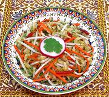

|
Cabbage Salad, Salt MassagedKazakhstan | ||||
| Makes: Effort: Sched: DoAhead: |
1-1/2 # * 45 min Best |
This salad shows influence of the substantial Korean community in Kazakhstan and Uzbekistan. Korean soups and salads have become quite popular in the region. While the salt massage softens the vegetables some, the salad still has satisfying crunch. | |||
|
|
1 3 2 1 1 6 ------- 2-1/2 2 2 |
# oz oz t t oz --- T T T |
Cabbage (1) Carrots Chilis, red (2) Salt Sugar Bean Sprouts -- Dressing Rice Vinegar Cilantro Dill, fresh |
Make - (45 min - 20 min work)
|